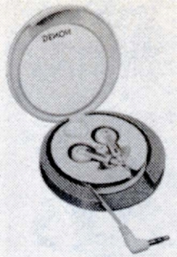
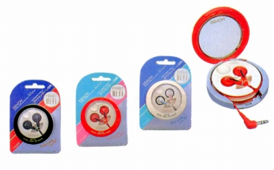

AH-C5
 


■価格 3,500円■型式 ダイナミック型■振動板 ■インピーダンス 16Ω■再生周波数帯域 18-22,000Hz■許容入力■感度 106dB/mW■コード 1.2m L型ステレオミニプラグ■重量 6.0g（コード含まず）■発売 1987年■販売終了 1988年頃■備考 リール式収納ケース付属、ダイナミックトーン回路付きレッド、ホワイト、ブラック仕上げあり
デンオンのインデックスへ